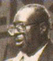

Шести футов четырёх дюймов роста и весом 250 фунтов, Альберт Кинг возвышается на голову над бесчисленными гитаристами, внёсшими свою лепту в развитие послевоенного блюза. Внешне узнать его можно мгновенно – по росту, неизменной трубке, зажатой в зубах и, конечно, его футуристической гитаре, Гибсон “Flying V.” Но его музыка ещё более индивидуальна. Интенсивный, густой звук его гитары и обманчиво простой стиль оказали неоценимое влияние на легионы гитаристов.Не многое известно о детстве Альберта, и его склонность приукрашивать истину только осложняет дело. Он родился в Индианоле, в сердце Дельты, но и его настояшее имя, и дата рождения, 25 апреля 1923 года, подвегались сомнению – многие из его знакомых утверждали, что Альберт на несколько лет старше.
Альберт принял популярный в то время среди блюзмэнов псевдоним “Кинг” в начале 50'х, вслед за успехом “Three O’clock Blues” Би Би Кинга. Отцом Альберта был бродячий проповедник, расставшийся с семьёй когда Альберту было 5 лет. Мать Альберта, Мэри Блевинс, вскоре вышла замуж за Уилла Нельсона, и вся семья, включавшая десяток разного рода дядьёв и двоюродных сестёр, переехала в Форрест Сити в Арканзасе. Мальчишка принял фамилию отчима и стал Альбертом Нельсоном.
Детство и юность Альберта были сравнительно нормальными. Их семья кормилась фермерством, что было обычным для чёрных жителей Юга. Как и многие другие деревенские дети, Альберт почти не ходил в школу, и научился читать и писать уже взрослым. Первые ноты Альберт извлёк из легендарной “Диддли Боу” – натянутой проволоки, на которой играли бутылкой. Потом он смастерил себе гитару. Годы спустя он вспоминал: “Корпус я сделал из сигарной коробки, а гриф – из обструганного деревца. Струны были намотаны на деревянные колышки. Я настроил их по разному, но все шесть были из одинаковой проволоки.”
Когда Альберт подрос, он устроился работать водителем бульдозера. В 1942м он купил у приятеля настоящую гитару, Гилд (Guild), за один доллар двадцать пять центов. Вдохновлённый музыкой Блайнд Лемон Джефферсона, Лонни Джонсона, “Сонни Боя” Виллиамсона и, позже, Т-Бон Уокера, Альберт потратил немало времени учась играть на своей гитаре, хотя и необычным способом. Альберт был левшой и держал обыкновенную гитару грифом влево и головой вниз. В то же время он пел с местной госпел-группой The Harmony Kings.
Одна из характерных особенностей его стиля – игра без медиатора. “Я никогда не мог играть медиатором,” – говорил он в интервью с журналом Guitar Player (сентябрь '77) – “Я пробовал, но как только я разогревался, швырял его в угол. Наконец я решил – ну его к чёрту. Так что я играю просто большим пальцем.”
В 1950, Альберт случайно познакомился с М.С. Ридером и переехал в Оцеолу. Ридер был владельцем знаменитого клуба Т-99. Оцеола находится между Мемфисом и Сент-Луисом, прямо на шестдесят первой дороге, и каждая группа, проезжавшая из одного города в другой, считала должным там остановиться. Из Мемфиса клуб Т-99 посещали такие светила, как Би Би Кинг, Бобби Бланд, Руфус Томас, Роско Гордон и Джонни Эйс.
Была в Т-99 и собственная группа, The In The Groove Boys, с непостоянным составом, который в разное время включал в себя пианиста Эдди Сноу, работавшего для знаменитого лейбла Sun, Карла Тейта, Кларенса Дрейпер и Уолтера Джефферсона. В жерло этого музыкального вулкана приземлился Альберт Нельсон со своей первой электрогитарой, стадвадцатидолларовым Эпифоном.
Бывший вокалист Айка Тёрнера и житель Оцеолы Джимми Томас был тогда подростком. “В субботу вечером Оцеола кипела,” – вспоминает он, - “маленький городишко, но совершенно бешеный. Оцеола была даже круче чем Каир и всякие такие места, хоть они и больше. В каждом кабаке, в каждом кафе играли на деньги. И Альберта я помню, конечно! Мы его называли Большой Альберт или Чёрный Альберт, такие у него были прозвища. Он водил трейлер, хлопок перевозил, а на гитаре играл по выходным.”
Карл Тейт, игравший в то время в In The Groove Boys на барабанах, вспоминал: “Альберт был блюз на сто процентов. Он иногда и быстрые блюзы играл, но его настоящие вещи это, конечно, корневой, кантри-блюз, типа Little Boy Blue.”
The In The Groove Boys были популярной группой, и, кроме Т-99, они играли в других барах Оцеолы и соседних городов. Вдобавок, их регулярно приглашали на местную радиостанцию. Тэйт рассказывает: “Альберт играл и на ударных тоже. Когда я пропускал трансляцию, он садился за установку вместо меня, а кто-нибудь другой играл на гитаре.”
“Мы знали тогда, может, три-четыре песни. И мы их играли – быстро, медленно и средне,” - говорил сам Альберт. Один из жителей Оцеолы подтверждает: “Альберт был так себе музыкант когда он начал здесь играть.”
Альберт вполне прижился в Оцеоле. У него родилось трое детей, и двое из его сестёр, Эдди Лу и “Биг Ред,” тоже переехали и поселились неподалёку.
Впрочем, его жизнь не была слишком гладкой. Альберт не любил вспоминать об аварии, в которую он попал в начале 50-х в Арканзасском городке Марион. Грузовик с Альбертом за рулём столкнулся с другой машиной, и несколько человек погибло. Погибшие были белыми, а в накалённой атмосфере южных штатов это могло привести к большим неприятностям. Альберт попал в тюрьму. К счастью, у Альберта были влиятельные знакомые: М.С. Ридер и известный белый бизнесмен по имени Хал Джексон помогли вызволить его из тюрьмы. В результате Альберт отделался сравнительно легко.
Вдохновлённый десятками блюзменов из Арканзаса и Миссиссипи, нашедшими признание на Севере, Альберт решил перебраться в Гэри, штат Индиана. Там он присоединился к группе легендарных блюзовиков Джона Брима и Джимми Рида. И Рид, и Брим были гитаристами, так что Альберту пришлось сесть за барабаны.
Независимые лейблы вырастали как грибы, и за новыми талантами шла настоящая охота. Когда Альберт решил попытать счастья на записи, это было нетрудно сделать. Никто иной как Вилли Диксон свёл Альберта с известным Чикагским диджеем Алом Бенсоном, владельцем лейбла Parrot. Альберт вспоминал их встречу: “Я ждал его на улице полтора часа. Он выходит и вдруг говорит – Играй. У меня ни усилителя, ничего нет. Что делать – я начал играть. Он послушал меня минут пять и говорит – окей, сегодня вечером приходи в студию. Вот и всё.”
Тридцатого ноября 1953 года состоялся дебют Альберта Кинга на записи. В сессии участвовали Вилли Диксон на басу вместе с музыкантами из группы Элмора Джеймса, пианистом Литл Джонни Джонсом и барабанщиком Оди Пайном. Они записали пять вещей, две из которых – Be On Your Merry Way и Bad Luck Blues – вышли на сингле. На этих первых записях гитара Кинга звучит иначе, чем на записях 60-х годов. Не слышно ни того “жалящего” звука которому подражали все, ни фирменных риффов, копированных нота-в-ноту Клэптоном. Все записи, сделанные за эту сессию, звучат очень традиционно. Его вокал, впрочем, уже тогда звучал так же мощно и богато, как в последующие годы.
Впоследствии, рассказывая об этом сингле, Альберт часто утверждал вещи, в которые трудно поверить. Например, он говорил, что было продано 350000 копий и что за эту сессию ему заплатили четырнадцать долларов. Навряд ли он действительно получил больше четырнадцати долларов платы, но 350000 копий – это явное преувеличение. Синглы, расходившиеся настолько успешно, практически гарантировали появление песни в чартах, местных и всеамериканских, и продление контракта с музыкантом. Ни того, ни другого не случилось. В 1954-м Альберт вернулся в Оцеолу, не снискав славы.
Ещё два года прошли в выступлениях с группой In The Groove Boys по барам и кабачкам Арканзаса. К '56-му Альберт вновь снялся с места и переехал в Сент-Луис. В этом городе была большая блюзовая сцена и работы для музыканта было предостаточно. Но и соперники у него были серьёзные: Kings of Rhythm Айка Тёрнера, группы Литл Милтона и Рузвельта Маркса, Hound Dogs Джимми О'Нила.
Сперва Кинг просто ходил по многочисленным клубам, рассеянным по городу, знакомился с людьми, играл в джем-сейшенах. К октябрю '56-го он уже собрал группу и начал регулярно играть по клубам. Гитарист Ларри Дэвис, долгое время игравший с Кингом, вспоминает: “Я встретил Альберта когда он только переехал в Сент-Луис. Они тогда играли втроём в маленьком баре на Олив-стрит. Я сперва обратил на него внимание из-за его голоса. Он классно пел, сильный голос. А потом уже я стал с ним играть, я и Сэм Роудс.”
К '58-му году у Альберта появилась его Гибсон “Flying V,” гитара, которая всегда будет ассоциириваться с Кингом. Он называл её “Люси.” Может быть, он следовал своему однофамильцу Би Би, называвшему свою гитару “Люсиль,” но сам Альберт утверждает, что он назвал её в честь актрисы Люсиль Болл из популярного комедийного шоу I Love Lucy. (Кстати, долгое время существовал слух, что Альберт и Би Би – братья. Надо сказать, Альберт не особенно старался это опровергнуть.)
Альберт начал привлекать внимание публики. Гитарист Бобби Кинг вспоминает рассказ своего приятеля о том, что тот “видел самого здоровенного, чернющего, жуткого чувака за всю свою жизнь. Гитара у него – как чёртов космический корабль; сам он левша и у него самый последний размер ботинок, какой только бывает!” Медленно, но верно Альберт превращался из никому не известного новичка в одного из ведущих блюзменов Сент-Луиса.
В 1958-м году Роберт Лайонс, менеджер радиостанции KATZ, открыл Bobbin Records, в основном для того, чтобы выпускать диски Литл Милтона. Первый сингл Литл Милтона стал хитом, и Лайонс пустился в поиски других местных талантов. На Bobbin Records записывались блюзовики, госпел-группы и даже рокабиллы; летом '59-го к этому списку присоединился и Альберт.
К тому времени его группа увеличилась, и обычно с ним играли двое духовых и пианист; в составе порой участвовали ведущие музыканты города. Музыка тоже изменилась; теперь его саунд был ближе к джамп-блюзу. Сам Альберт стал более уверенным лидером, и его “фирменный” звук – яркая гитара со свингующей джазовой поддержкой – уже вполне сформировался. “Я всегда любил джаз, особенно биг-бэнды. Записи на Bobbin Records очень оркестрованные, с аранжировками, которые смешивают блюз и джаз. Это джазовые аранжировки вокруг блюзовой гитары.”
Среди записей Кинга на Bobbin Records практически не было плохих. Цепочка синглов, добавившая ему поклонников и упрочившая его репутацию среди музыкантов, увенчалась “Don’t Throw Your Love On Me So Strong,” с участием Айка Тёрнера на пианино. В конце '61-го года эта песня добралась до четырнадцатого места в ритм-энд-блюзовых чартах. Музыкантом заинтересовалась компания побольше, King Records, на которой Альберт записал альбом The Big Blues, вышедший в '63-м. Продолжал он записываться и на Bobbin Records, которые выпустили ещё восемь синглов и записали ещё один альбом. К сожалению, в конце '62 Bobbin закрылись, и готовый альбом провёл 'на полке' несколько лет, выйдя наконец, на Modern Blues Recordings под названием Let’s Have A Natural Ball (Давайте Оттянемся).
Среди коллег-музыкантов Альберт был известен не только за гитарную игру, но и за тяжёлый, неуживчивый характер. Его группа меняла состав с неслыханной быстротой. Раймонд Хилл, игравший с Кингом в начале 60-х, вспоминал: “Я проработал с Альбертом долго. Он всё время менял музыкантов, а мне приходилось всё улаживать. Я репетировал с новичками, обьяснял, чего он от них хочет. Да, Альберт – это что-то! Но мы с ним понимали друг друга, мы ладили.”
Барабанщик Юджин Вашингтон описывает это иначе: “Альберт – человек с характером. Дело в том, что большинство гитаристов которые ещё и поют, часто меняют темп. Когда они играют или поют, темп один, а когда они перестают играть, всё убыстряется. И это создавало постоянные конфликты. Так что ударников он менял, как перчатки!”
“В группе у Альберта музыканты зарабатывали хорошие деньги,” – вспоминает Кенни Райс, бросивший школу после приглашения играть в группе Кинга, – “Альберт платил больше, чем все остальные: Литл Милтон, Билли Гейлс, даже Айк Тёрнер. У Альберта можно было хорошо заработать – если только он тебя не выгонял. Если ты терпел его выходки и выкладывался на сцене, у него очень многому можно было научиться.
Он постоянно орал на своих барабанщиков ни за что. Он сам отсчитывал темп, но он играл по чувству – то быстрее, то медленнее. И в конце концов я уже мог следовать ему как угодно и держал ритм точно как он отсчитывал. Но мы всё равно часто ссорились.”
В мае '64-го Альберт вновь попал в студию, на этот раз записываясь для маленького независимого лейбла Coun-Tree. Джазовый вокалист Лео Гуден, державший также клуб под названием Gooden’s Blue Note Club в Ист-Сент-Луисе, создал Coun-Tree чтобы продавать пластинки группы самого Гудена, Leo’s Five. Кинг был одним из немногих 'посторонних' на лейбле.
На этой сессии Кинга сопровождают Leo’s Five, с Доном Джеймсом на органе и Кенни Райсом на ударных. Они записали материала на два сингла: Worsome Baby / C.O.D. и Lonesome / You Threw Your Love On Me Too Strong. Последняя вещь была переработкой его хита, вышедшего на Bobbin Records. По звуку эти записи – прямые предшественники его 'золотого периода' на Stax Records.
Эти диски хорошо продавались в Сент-Луисе, Чикаго и Канзас-Сити. Кенни Райс, перешедший к тому времени в Leo’s Five, вспоминает о проблеме, ставшей перед Гуденом: “Лео не любил ритм-энд-блюз, но записи Альберта начали продаваться даже лучше, чем диски самого Гудена. Они серьёзно раскрутились, их покупали в Канзас-Сити и везде, и нам пришлось поехать на тур с Альбертом. Я помню, как мы вьезжали в Канзас-Сити и включили радио. 'Сегодня вечером – большой концерт! Играют Leo’s Five и Альберт Кинг!' И они поставили песню Кинга. Я помню этот вечер. Всё шло вкривь и вкось. Альберт взбесился и ушёл со сцены, не доиграв – он в очередной раз не поладил со своими музыкантами. А Лео всю поездку злился, потому что Альберт был популярнее.”
В конце концов Гуден решил проблему этого соперничества простым способом: он расторг контракт с Кингом. Гитаристу пришлось искать новую компанию, которой стали Stax Records.
Открывшись в '59м под названием Satellite Records, этот независимый лейбл вскоре стал одним из китов жанра соул. На нём записывались, среди прочих, Руфус и Карла Томас, Booker T & the MGs, Отис Реддинг и дуэт Сэм энд Дейв. Но до Кинга на Stax-е не было ни одного блюзового музыканта, и президент компании, Джим Стюарт, отнёсся к предложению сотрудничать с Кингом очень скептически, полагая, что блюз не будет продаваться. К счастью, сестре Стюарта удалось его убедить.
С самого начала Альберт чувствовал себя как дома. Вездесущие Booker T & the MGs оказались идеальной поддержкой для его стиля. Его творческие силы были на подъёме, и записи, сделанные для Stax Records, были одновременно очень популярны среди слушателей и очень влиятельны среди коллег-блюзменов. На первой же сессии была записана ныне классическая вещь “Laundromat Blues,” обеспечившая Кингу первое появление на чартах за пять лет. Оборотной стороной сингла был инструментал “Overall Junction:” Кинг говорил, что его группа открывала концерты, играя “Overall Junction” до тех пор, пока все не настроятся! Следующая же запись дала одну из самых известных песен Кинга “Oh Pretty Woman (Can’t Make You Love Me).” За ней последовала “Crosscut Saw,” известная прежде в версии группы The Birmingham Blues Boys. Кинг обновил этот классический блюз, написанный ещё в тридцатых, добавив бит румбы в партию ударных.
В '67-м Букер Ти и вокалист Виллиам Белл записали демо-версию “Born Under A Bad Sign.” Песня, с её запоминающимся риффом и колоритными строчками типа “If it wasn’t for bad luck, I wouldn’t have no luck at all” была словно специально написана для Альберта. Когда на готовую демо-запись наложили вокал и гитару Кинга, шедевр был готов. На обороте сингла эту песню сопровождал медленный блюз “Personal Manager,” на котором Альберт сыграл одно из лучших своих соло.
В конце '67-го вышел первый альбом Кинга, Born Under A Bad Sign, состоявший частью из уже вышедших синглов, частью из нового материала. Появление этого диска совпало с ростом популярности Кинга среди белой молодёжи. В июле '68-го он впервые дал концерт в знаменитом Филморе Вест – Сан-Францисском хипповском концертном зале. Часть записей с него вышли на пластинке под названием Live Wire/Blues Power, одним из лучших 'живых' блюзовых альбомов, а всё остальное было выпущено ещё несколько лет спустя на паре пластинок под названием Wednesday/Thursday Night In San Francisco.
Вернувшись в Мемфис, Альберт записал свой первый настоящий студийный альбом, Years Gone By, с участием всё тех же MGs и духовой секции The Memphis Horns. На нём были версии такой классики блюза, как “Killing Floor” Хаулин Вулфа и “The Sky Is Crying” Элмора Джеймса, а также его собственная вещь “Drowning On Dry Land.”
Альберту довелось сыграть несколько неожиданный концерт в ноябре '69-го, когда его пригласили выступать в Powell Concert Hall с симфоническим оркестром. Он сыграл пять из своих недавних хитов для Stax-а. Одетый в чёрный фрак и со своей Flying V наперевес, Альберт являл довольно нелепое зрелище.
Но его изобретательный менеджер на этом не остановился. Следующим проектом был 'концептуальный' альбом King Does The King’s Things: Альберт Кинг поёт песни Элвиса Пресли. Чем меньше будет сказано об этом странном альбоме, тем лучше.
Зато следующая его запись более чем оправдала ожидания слушателей. Альбом I’ll Play The Blues For You был записан с духовыми группами The Bar-Kays, The Movement и The Memphis Horns, и представлял собой идеальный сплав современного соул/фанка и блюза. Многие, как, например, Би Би Кинг, пытались воспроизвести этот саунд, но безуспешно. В отличие от них, Альберт на этих записях звучит естественно и раскованно, не производя впечатления рассчётливого попсовика, зарабатывающего на
Ставшие классическими вещи как, например, “Answer To The Laundromat Blues” – ответ на его ранний хит, – “Angel of Mercy,” мрачный и медленный блюз, или “Breaking Up Somebody’s Home” сделали этот альбом Библией современного блюза. Но настоящей жемчужиной была “I’ll Play The Blues For You,” которую до сих пор крутят на 'чёрных' радиостанциях.
В 1974-му году у Stax-а начались финансовые проблемы, и Альберт перешёл на лейбл Utopia, на котором вышли два следующих альбома. К сожалению, оба были очень неровными, и гитара и вокал Альберта утонули в обилии струнных и бэк-вокала. К концу 70-х Кинг начал записываться на Tomato, и качество его музыки заметно повысилось. Его эксперименты с соул-блюзовым гибридом закончились и он вернулся к чистому блюзовому звучанию. Он работал в студиях Детройта и Нью-Орлеана, и одна из этих сессий вышла под названием New Orleans Heat. В восьмидесятых Кинг заключил контракт с Fantasy Records: два альбома, вышедшие на Fantasy, состояли из переигранных старых вещей и неплохого нового материала.
В середине восьмидесятых Альберт начал поговаривать об уходе 'на покой,' а затем и вправду объявил о выходе в отставку, но это не помешало ему регулярно играть на всех больших блюзовых фестивалях и продолжать ездить на гастроли в Европу. Последний концерт он сыграл в Лос Анджелесе 19-го декабря 92-го года. На следующий день он вернулся домой в Мемфис, где с ним случился инфаркт. 21-го декабря Альберт Кинг ушёл из жизни.
Статья с диска The Ultimate Collection
Перевод mikewhy